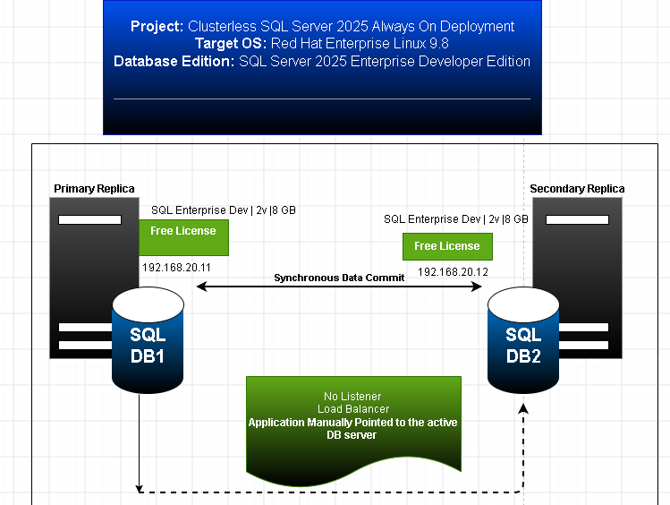

📑 RHEL 9.8 Clusterless Always On Deployment Suite
Production Blueprint for 2-Node Synchronous Read-Scale Availability Groups
👋 Welcome to the Deployment Center! This deployment plan manages high availability directly inside the database engine tier by enforcing CLUSTER_TYPE = NONE. By removing traditional Linux clustering managers, we cut out system daemon complexity and lower operational runtime costs.
🗺️ Architecture Configuration Topology
This topography spans two active server targets running Red Hat Enterprise Linux 9.8 with local data commits:

Figure 1: Clusterless High Availability Engine Strategy Topology Map
Select an execution phase link below to manage host preparation tasks: